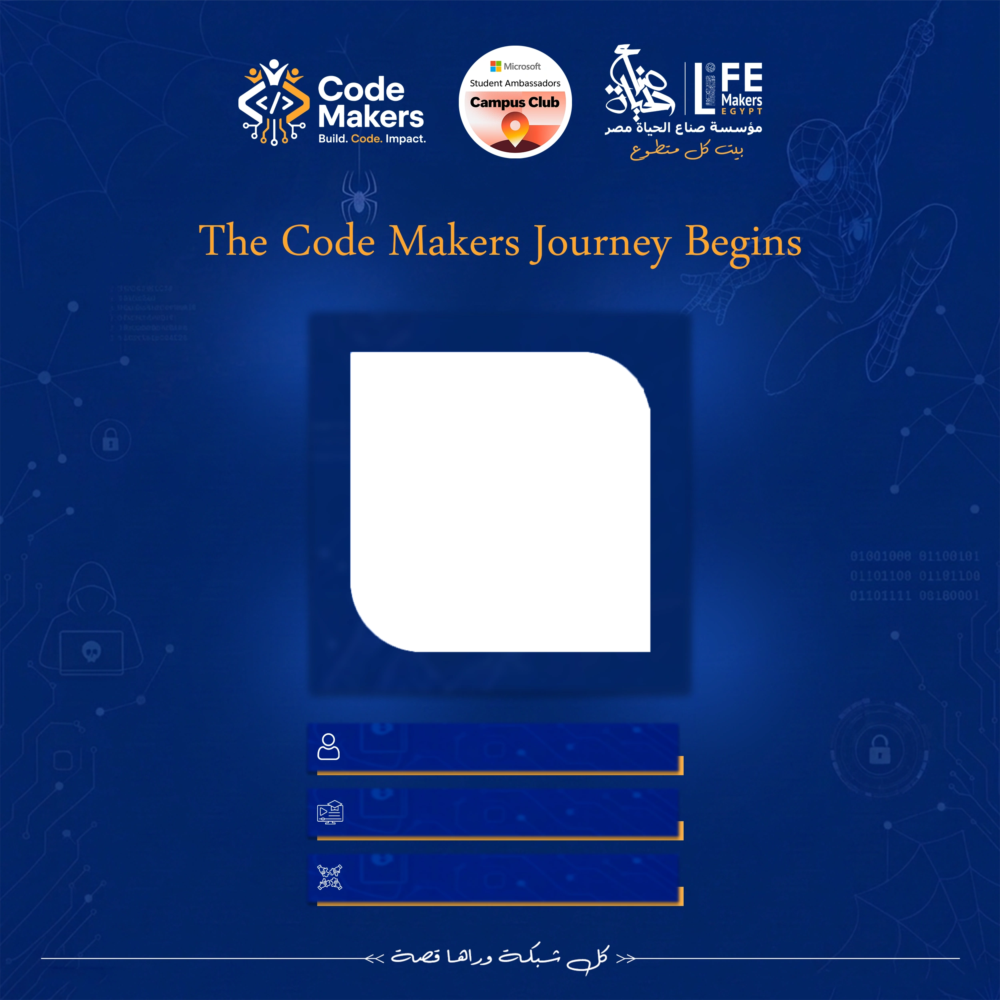

صمّم صورتك التكريمية
في ثوانٍ
ارفع صورتك ليضعها الإطار في مكانها المخصص تلقائياً، ثم أضف الاسم والمسمى وكلمة الشكر — واحصل على تصميم جاهز للنشر. كل المعالجة تتم على جهازك بخصوصية كاملة.

كل ما تحتاجه لصورة تكريمية راقية
أدوات احترافية لإنشاء صور التكريم والعضوية — بدون برامج معقدة.
رفع الصور
JPG, PNG, WEBP — مع دعم السحب والإفلات والاختيار المباشر.
إطار ذكي
يحدد الإطار مكان صورتك ومقاسها تلقائياً داخل المساحة المخصصة.
تعديل الصورة
حرّك صورتك وكبّرها أو صغّرها لتناسب الإطار تماماً.
النصوص والبيانات
الاسم والمسمى وكلمة الشكر في أماكنها المحددة بدقة داخل الإطار.
تحميل عالي الجودة
صدّر تصميمك بصيغة PNG أو JPG بالدقة الأصلية دون فقد في الجودة.
خصوصية تامة
صورتك تبقى على جهازك ولا تُرفع إلى أي خادم.
أربع خطوات فقط
من رفع الصورة إلى التحميل — تجربة سلسة وسريعة.
ارفع صورتك
اختر صورتك الشخصية من جهازك بإحدى الصيغ المدعومة.
الإطار يضبط نفسه
تظهر صورتك في مكانها الصحيح داخل الإطار فور رفعها.
أضف بياناتك
أضف الاسم والمسمى وكلمة الشكر مع معاينة مباشرة.
حمّل التصميم
حمّل تصميمك النهائي بجودة عالية وشاركه مع من تحب.